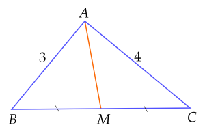
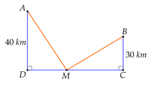
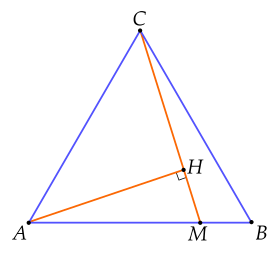

Câu 10. Đại số
Phần I — Trắc nghiệm chọn một phương án
0,25 điểm
Thời gian (tính bằng giây) của $10$ học sinh khi chạy cự ly 100 m được ghi lại như sau.
$15,2; \quad 14,8; \quad 15,0; \quad 15,2; \quad 14,6; \quad 15,2; \quad 14,8; \quad 15,0; \quad 15,2; \quad 15,0$ .
Mốt của mẫu số liệu trên bằng
Câu 13. Đại số
Phần II — Trắc nghiệm đúng hoặc sai
1 điểm
Lớp 10A trường THPT Kon Tum có $39$ bạn học sinh. Do trường có tổ chức Hội Thao cấp trường cho học sinh với hai môn là bóng bàn và cầu lông nên lớp đã chọn ra các bạn học sinh để đi dự thi. Biết rằng có $21$ bạn chơi bóng bàn, $15$ bạn chơi cầu lông và $7$ bạn chơi cả bóng bàn và cầu lông.
(Nhấp vào ô màu vàng để chọn đúng / sai)
Mỗi ý a), b), c)… là một phát biểu độc lập: nhấp vào ô để chọn Đúng/Sai,
0,25 điểm mỗi ý.
Câu 14. Hình họcCó vẽ hình
Phần II — Trắc nghiệm đúng hoặc sai
1 điểm
Cho tam giác $ABC$ vuông tại $A$ , $AB=3$ , $AC=4$ . Gọi $M$ là trung điểm của $BC$ (tham khảo hình vẽ).

(Nhấp vào ô màu vàng để chọn đúng / sai)
Mỗi ý a), b), c)… là một phát biểu độc lập: nhấp vào ô để chọn Đúng/Sai,
0,25 điểm mỗi ý.
Câu 15. Hình họcKhông vẽ hình
Phần III — Trắc nghiệm trả lời ngắn
0,5 điểm
Trong mặt phẳng với hệ tọa độ $Oxy$ , cho hai vectơ $\overrightarrow{a}=(1 ; \sqrt{3})$ và $\overrightarrow{b}=(-2 \sqrt{3} ; 6)$ . Góc giữa hai vectơ $\overrightarrow{a}$ và $\overrightarrow{b}$ bằng bao nhiêu độ?
Trả lời ngắn — gõ kết quả, kèm đơn vị nếu đề hỏi đơn vị.
Câu 16. Đại số
Phần III — Trắc nghiệm trả lời ngắn
0,5 điểm
Cô Mai có $180\,000$ đồng để mua đồ dùng trang trí lớp học nhân dịp khai giảng năm học mới. Cô định mua ít nhất $2$ hộp bút màu, mỗi hộp giá $10\,000$ đồng và một số tấm thiệp nhỏ để dán bảng, mỗi tấm giá $12\,000$ đồng. Với số tiền đó, cô Mai có thể mua nhiều nhất bao nhiêu tấm thiệp?
Trả lời ngắn — gõ kết quả, kèm đơn vị nếu đề hỏi đơn vị.
Câu 17. Đại số
Phần III — Trắc nghiệm trả lời ngắn
0,5 điểm
Hai đảo $A$ và $B$ cách bờ một khoảng $AD=40$ km và $BC=30$ km (minh họa như hình vẽ). Người ta muốn dựng một trạm phát sóng $M$ trên bờ $DC$ sao cho khoảng cách từ trạm phát sóng đến hai đảo bằng nhau. Biết khoảng cách giữa hai vị trí $D$ và $C$ là $70$ km. Tổng khoảng cách từ trạm phát sóng đến các đảo bằng bao nhiêu km?

Trả lời ngắn — gõ kết quả, kèm đơn vị nếu đề hỏi đơn vị.
Câu 18. Hình họcCó vẽ hình
Phần III — Trắc nghiệm trả lời ngắn
0,5 điểm
Cho tam giác đều $ABC$ và các điểm $M, \, H$ thỏa mãn $\overrightarrow{AM}=\dfrac{3}{4} \overrightarrow{AB}, \, \overrightarrow{CH}=k \overrightarrow{CM}$ (tham khảo hình vẽ). Biết giá trị $k$ để $AH$ vuông góc với $CM$ bằng $\dfrac{a}{b}$ , trong đó $a,\, b$ là các số nguyên dương và $\dfrac{a}{b}$ là phân số tối giản. Giá trị của $a+2b$ bằng bao nhiêu?

Trả lời ngắn — gõ kết quả, kèm đơn vị nếu đề hỏi đơn vị.